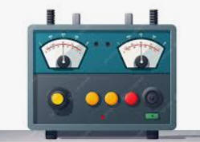

TC 3001 C. Analítica de datos y herramientas de inteligencia artificial . |
||
|
||
. Objetivos:
 Modalidad:

Propósito:
Actividad: "La falla del generador" Una alerta visual muestra un
sistema que pierde energía. Solo nuestra lógica puede balancear el núcleo".
ta 1. Módulo Suma: Programar suma_numeros() para equilibrar el voltaje hasta llegar a 0. La función suma_numeros() (El Balanceador): No es solo una suma; es el cálculo del diferencial de carga de la estación. Los números negativos son "fugas" y los positivos "recargas". El sistema solo se estabiliza cuando la señal es 0. 
Casos de prueba:
2. Módulo Descenso: Programar secuencia_descendente(N) para enfriar el núcleo (la temperatura baja hasta llegar a 1). La función secuencia_descendente
Por ejemplo: secuencia_descendente ( 3 ) desplegará en pantalla:
El valor inicial es 3 secuencia_descendente ( 9 ) desplegará en pantalla:
El valor inicial es 9 3. Módulo Acceso: Programa "Adivina mi número" para autenticar tu identidad, obtener permisos de administrador y calibrar los sensores del sistema. La función 'Adivina mi número' (La Validación y Calibración): Los alumnos validan el ingreso ingreso al sistema y calibran los sensores.
Guarda tu archivo como: A4_Matrícula.ipynb 
|